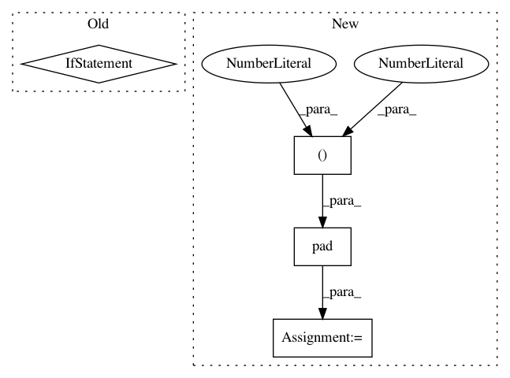

8cdbb1637b140c01f431831e7b2c2a63afc96209,kapre/time_frequency.py,Melspectrogram,call,#Melspectrogram#Any#,328
Before Change
output = K.permute_dimensions(output, [0, 3, 2, 1])
if self.power_melgram != 2.0:
output = K.pow(K.sqrt(output), self.power_melgram)
if self.return_decibel_melgram:
output = backend_keras.amplitude_to_decibel(output)
return output
def get_config(self):
config = {
After Change
if self.data_format == "channels_first":
x = K.permute_dimensions(x, (0, 2, 3, 1))
x = tf.pad(
x, tf.constant([[0, 0], [self.n, self.n], [0, 0], [0, 0]]), mode=self.mode
) // pad over time
kernel = K.arange(-self.n, self.n + 1, 1, dtype=K.floatx())
kernel = K.reshape(kernel, (-1, 1, 1, 1)) // time, freq, in_ch, out_ch
x = K.conv2d(x, kernel, data_format="channels_last") / self.denom
if self.data_format == "channels_first":
x = K.permute_dimensions(x, (0, 3, 1, 2))
return x
def get_config(self):
In pattern: SUPERPATTERN
Frequency: 3
Non-data size: 4
Instances
Project Name: keunwoochoi/kapre
Commit Name: 8cdbb1637b140c01f431831e7b2c2a63afc96209
Time: 2020-08-14
Author: gnuchoi+github@gmail.com
File Name: kapre/time_frequency.py
Class Name: Melspectrogram
Method Name: call
Project Name: azavea/raster-vision
Commit Name: c92d07f366a259971cf8b41b82faf9d0134acd2e
Time: 2017-03-29
Author: lewfish@gmail.com
File Name: src/semseg/tasks/utils.py
Class Name:
Method Name: make_prediction_img
Project Name: eriklindernoren/PyTorch-YOLOv3
Commit Name: 2ee8ac1546400645908b61ef015cdf5d71aa34cc
Time: 2019-04-22
Author: eriklindernoren@live.se
File Name: utils/datasets.py
Class Name:
Method Name: pad_to_square